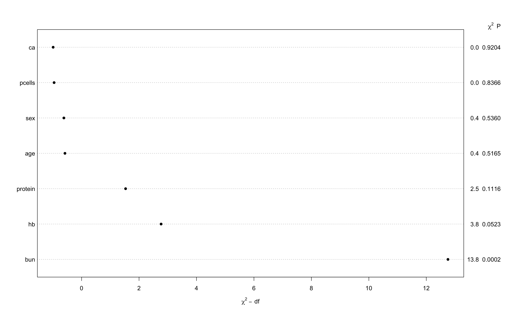

Chapter 6 Fitting the Cox regression model
Hér er stuttlega sýnt hvernig eitt hættuhlutfall er fengið með Cox líkaninu.
Prognosis_for_women_with_breast_cancer <- read.table("Data/Prognosis for women with breast cancer.dat",
header=T)
d_1_2 <- Prognosis_for_women_with_breast_cancer
d_1_2 <- d_1_2 %>% mutate(stainf = factor(stain))En fyrst alltaf að skoða tíðni atburða:
r <- d_1_2 %>% group_by(stainf) %>% summarise(n=n(),
d=sum(status),
V=sum(time),lambda=d/V,se.lambda=sqrt(d)/V)
r## # A tibble: 2 x 6
## stainf n d V lambda se.lambda
## <fct> <int> <int> <int> <dbl> <dbl>
## 1 1 13 5 1652 0.00303 0.00135
## 2 2 32 21 2679 0.00784 0.00171## [1] 0.003026634 0.007838746## [1] 0.9516276## [1] 2.589922Svo Cox líkanið:
## Call:
## coxph(formula = Surv(time, status) ~ stainf, data = d_1_2, ties = "breslow")
##
## coef exp(coef) se(coef) z p
## stainf2 0.9080 2.4794 0.5009 1.813 0.0699
##
## Likelihood ratio test=3.87 on 1 df, p=0.04911
## n= 45, number of events= 26## stainf2
## 2.479398## 2.5 % 97.5 %
## stainf2 0.9288808 6.618086Næst skoðum við fjölbreytulíkan úr multiple myaloma gögnunum.
| Name | d_1_3 |
| Number of rows | 48 |
| Number of columns | 10 |
| _______________________ | |
| Column type frequency: | |
| numeric | 10 |
| ________________________ | |
| Group variables | None |
Variable type: numeric
| skim_variable | n_missing | complete_rate | mean | sd | p0 | p25 | p50 | p75 | p100 | hist |
|---|---|---|---|---|---|---|---|---|---|---|
| patient | 0 | 1 | 24.50 | 14.00 | 1.0 | 12.75 | 24.5 | 36.25 | 48.0 | ▇▇▇▇▇ |
| time | 0 | 1 | 23.38 | 23.72 | 1.0 | 6.75 | 14.5 | 37.00 | 91.0 | ▇▁▂▁▁ |
| status | 0 | 1 | 0.75 | 0.44 | 0.0 | 0.75 | 1.0 | 1.00 | 1.0 | ▂▁▁▁▇ |
| age | 0 | 1 | 62.90 | 6.96 | 50.0 | 58.75 | 62.5 | 68.25 | 77.0 | ▅▇▇▇▃ |
| sex | 0 | 1 | 1.40 | 0.49 | 1.0 | 1.00 | 1.0 | 2.00 | 2.0 | ▇▁▁▁▅ |
| bun | 0 | 1 | 33.92 | 35.91 | 6.0 | 13.75 | 21.0 | 39.25 | 172.0 | ▇▂▁▁▁ |
| ca | 0 | 1 | 9.94 | 1.45 | 8.0 | 9.00 | 10.0 | 10.00 | 15.0 | ▇▆▃▁▁ |
| hb | 0 | 1 | 10.25 | 2.79 | 4.9 | 8.65 | 10.2 | 12.57 | 14.6 | ▃▂▇▅▆ |
| pcells | 0 | 1 | 42.94 | 30.02 | 3.0 | 21.25 | 33.0 | 63.00 | 100.0 | ▇▇▆▃▅ |
| protein | 0 | 1 | 0.31 | 0.47 | 0.0 | 0.00 | 0.0 | 1.00 | 1.0 | ▇▁▁▁▃ |
Hér setjum við allar breytur inn. En hugsanlea mundum við laga þær til. Breyta í factor og miðja en það kemur síðar:
f4 <- coxph(Surv(time,status) ~ age + sex + bun + ca + hb + pcells + protein,data = d_1_3,ties="breslow" )
f4## Call:
## coxph(formula = Surv(time, status) ~ age + sex + bun + ca + hb +
## pcells + protein, data = d_1_3, ties = "breslow")
##
## coef exp(coef) se(coef) z p
## age -0.019358 0.980828 0.027924 -0.693 0.488159
## sex -0.250899 0.778101 0.402286 -0.624 0.532836
## bun 0.020826 1.021044 0.005929 3.513 0.000443
## ca 0.013125 1.013211 0.132442 0.099 0.921061
## hb -0.135241 0.873506 0.068891 -1.963 0.049635
## pcells -0.001594 0.998407 0.006577 -0.242 0.808533
## protein -0.640438 0.527061 0.426687 -1.501 0.133367
##
## Likelihood ratio test=16.24 on 7 df, p=0.02302
## n= 48, number of events= 36Frank Harrell er líka með fall fyrir Cox likanið. Það gefur meiri upplýsingar t.d. R2 og Dxy sem er skylt concordance index C þannig að \(C = 0.5(Dxy+1)\)
f5 <- cph(Surv(time,status) ~ age + sex + bun + ca + hb + pcells + protein,data = d_1_3,ties="breslow" )
f5## Cox Proportional Hazards Model
##
## cph(formula = Surv(time, status) ~ age + sex + bun + ca + hb +
## pcells + protein, data = d_1_3, ties = "breslow")
##
## Model Tests Discrimination
## Indexes
## Obs 48 LR chi2 17.53 R2 0.309
## Events 36 d.f. 7 Dxy 0.410
## Center -2.219 Pr(> chi2) 0.0143 g 0.940
## Score chi2 25.59 gr 2.561
## Pr(> chi2) 0.0006
##
## Coef S.E. Wald Z Pr(>|Z|)
## age -0.0181 0.0278 -0.65 0.5165
## sex -0.2495 0.4031 -0.62 0.5360
## bun 0.0227 0.0061 3.71 0.0002
## ca 0.0133 0.1327 0.10 0.9204
## hb -0.1330 0.0685 -1.94 0.0523
## pcells -0.0014 0.0066 -0.21 0.8366
## protein -0.6833 0.4294 -1.59 0.1116
## Svo er mjög gagnlegt að bera saman spágetu breytanna út frá kí-kvaðrat gildum og bera saman.
Hér sést í fljótu bragði að bun, hb og e.t.v. protein skipta mestu máli.
